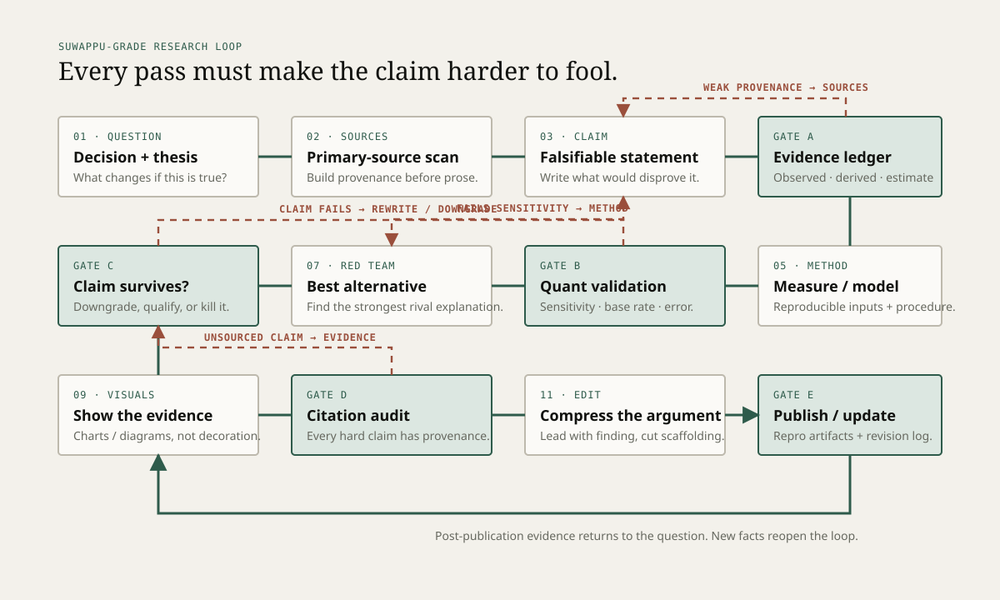

Can every consequential claim be traced?
Prefer primary documents, source code, filings, papers, raw measurements, protocol specifications, or direct experiment artifacts. Secondary sources are context, not the foundation.
This is the publication loop I use for technical research notes: primary sources before prose, claims before rhetoric, explicit evidence classes, quantitative validation where possible, a serious rival explanation, and a revision path after publication.

A polished argument can still be wrong. These gates are designed to stop presentation quality from laundering weak evidence.
Prefer primary documents, source code, filings, papers, raw measurements, protocol specifications, or direct experiment artifacts. Secondary sources are context, not the foundation.
State denominator, units, comparison set, measurement window, assumptions, and uncertainty. Run sensitivity or alternative specifications when the conclusion depends on a parameter choice.
Steelman the rival mechanism and test it. If it explains the evidence as well as the preferred thesis, narrow the conclusion instead of writing around the ambiguity.
No citation laundering. A citation must support the specific factual or quantitative claim adjacent to it. Distinguish facts from derivations, estimates, forecasts, and engineering targets.
Link code, data, queries, configs, calculation notebooks, benchmark prompts, or hardware logs where practical. If reproduction is impossible, explain exactly why.
The article should never make an estimate look observed or an engineering target look achieved.